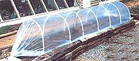

Undercover Device: The Cloche
September/October 1984
Increase your garden's productivity with low-cost, manageable, season-extending structures.
by Johanna Linch
One harvest, two harvests, three harvests, four ...Wouldn't it be wonderful to be able to grow fresh fruits, flowers, and vegetables for your table all year round? Unfortunately, for most of us the growing season is limited to just a few months out of the year. Cold, wind, and excessive precipitation dictate when and for how long plants will grow. Until soil and air reach a certain level of warmth, for example, flowers and vegetables cannot germinate. And, at the other end of the scale, they go dormant-or die altogether-when temperatures drop below a certain point. Then too, heavy seasonal rains can drown young seedlings, wash them out of the soil, or beat them into the ground, while strong winds occasionally batter and break tender leaves and stems. All this means that, without special help of some kind, most plants can only be cultivated between the dates of the last spring frost and the first frost in autumn or during the benign days between the end and new beginning of the rainy, superhot, or storm seasons. In some areas this results in a growing season of two months or less-too little time for many of the most desirable crops to mature.
There are ways to bypass the weather, however, by giving plants the environment they need to flourish out of season. Structures such as the greenhouse, the cold frame, and the hotbed can all provide the necessary microclimate for crops to be started earlier in spring and allowed to mature deeper into autumn. Still another way to control the environment is through the use of cloches.
BELLING THE CROP
Cloches-a term that means "bells" in French-have been used extensively in the garden since the 1800's. To advance their crops for market, nineteenth-century French gardeners placed bell-shaped glass jars over individual seedlings to protect them from frost and to give them warm, undisturbed surroundings in which to grow. These early cloches had no holes for ventilation, so they had to be tilted and propped open with a stick or stone when excessive heat or moisture built up inside. Because each individual plant had its own cover, maintaining adequate ventilation for a large crop was tedious and time-consuming; furthermore, storage of the glass bells from one season to the next required a lot of space and sometimes resulted in costly breakage. Therefore, over the years gardeners have sought ways to improve on this basic design; and although empty peanut butter and canning jars-modern versions of yesteryear's elegant glass domes-are still used today, new devices made with metal and plastic have greatly improved the situation.
FROM INDIVIDUAL TO MASS COVER
One commonly used-and effective-individual cloche is made from the ubiquitous plastic gallon or half-gallon milk bottle. The bottom is cut out, and the bottle is set directly over the plant. Ventilation is provided when the bottle cap is removed; the translucent sides help to diffuse some of the sun's fiercest rays; storage is comparatively easy (bottles can be strung up by the dozen if you simply run rope through their handles); and the cost is ...well, about as minimal as you can get. In fact, many potential bottle cloches can be found littering the roadside.
A step beyond the individual cloche is the tent cloche ...or its somewhat roomier cousin, the barn cloche. The tent cloche consists of two panels of glass or clear plastic that lean together at the top, forming a triangle with the ground as baseline. Such a design can straddle a number of plants, although-because of the steep angle of the sides-usually only one row can be accommodated. Open at both ends, the tent cloche affords less protection than the classic bell jar, but it offers considerably better ventilation ...without needing to be propped open. Tent cloches can be made from salvaged windows that are hinged together or leaned against angled posts, from plastic-covered frames, or from panels of sheer glass or hard plastic. Patent clips are available to hold such panels together at the top, but duct tape is also effective and certainly less expensive.
The barn cloche looks like a small, transparent house with two long sides and a peaked roof. It can span several closely spaced rows, and can accommodate relatively tall or bushy plants. It's also somewhat more difficult to build and more expensive than either of the two above-mentioned designs.
Both the tent cloche and the barn cloche are portable, easy to use, and easy to store. Their chief disadvantages lie in their size-which is generally limited to, say, three or four feet in length-and their open ends, which may admit too much cold air or wind-driven rain. The size limitation means that it takes several of them, set end to end, to cover a normal row of plants. They are also somewhat limited in the width to which they can be spread open, so they aren't very practical for wide-bed planting.
Somewhere between the bell jar and tent is the umbrella-style cloche, which is simply a big, lightweight (usually made with plastic sheeting) dome. Like the bell jar, it may need to be propped open for ventilation; like the tent, it can cover a number of plants. It's particularly suitable for small, broad-sown beds.
Still another option is the tunnel cloche, which is about as close to a greenhouse as one can get. The tunnel cloche stretches over a long row-nineteen or twenty feet is not uncommon-and can span a four-or five-foot-wide bed with ease. It consists of a frame covered with translucent material, usually clear plastic sheeting. Its chief advantage lies in the great area it can cover, which suits today's wide-bed style of cultivation. Its chief disadvantage is that it's hard to move from one site to another. Certain types, such as those made of heavy reinforcing wire that's permanently covered with plastic, are cumbersome and dif ficult to store, relocate, or even open for ventilation ...although they could probably keep plants safe from all but a hurricane. Another variety utilizes spring-steel hoops thrust into the ground and then overlaid with plastic sheeting. The plastic is clamped in place with a second series of hoops that fit over, or beside, the first ones. Hoops can also be made from lengths of reinforcement rod or half-inch PVC pipe that are then covered with plastic sheeting.
Whatever the shape, size, or material, any of these cloches can significantly affect the site in which crops are to grow, trapping the radiant energy of the sun to heat the enclosed soil and air; protecting the area from wind, rain, and frost; and in general supplying a suitable climate for young plants.
AN EMERGENCY TUNNEL
At MOTHER's Eco-Village we use various methods to help extend the season, including south-facing beds with protective rock walls that provide shelter and heat-storing thermal mass ...hotbeds warmed with deep-dug, decomposing organic materials ...and a variety of structures or devices such as greenhouses and cloches. Some of the latter are on trial for possible later incorporation into the EcoVillage routine, and others are in regular use.
Then again, some come into being because of an emergency. Such was the case with our PVC tunnel cloches.
You see, we needed a cover photograph featuring "My MOTHER's House" for our Homebuilding and Shelter Guide (stock No. 64162, available from Mother's Bookshelf for $12.95 plus $1.50 for postage and handling). Now, magazine articles, promotional pieces, cover art, and other published items must all be put together weeks-even months-before they're printed and released. So, although we wanted to show the house with its summer garden, the photograph had to be taken at the beginning of May ...less than a week after the last spring frost and long before summer flowers and vegetables would be ready. To solve the problem, our gardeners decided to start the necessary seedlings in a greenhouse in midwinter, and then build tunnel cloches to cover the long beds in front of the house, which would permit the young plants to be transferred early to their permanent location and allow them to mature in time for the camera.
Experience with plastic-covered reinforcement wire cages had taught our staff that these unwieldy structures would be unsuitable for the five-foot-wide beds that had to be covered. Attempts to find spring-steel hoops and double-clamped plastic failed. Ten-foot-long iron reinforcement rods proved to be very difficult to bend into hoops. Tunnel cloches made of half-inch PVC pipe seemed the best answer.
MAKING THE PVC CLOCHE
The basic construction of a PVC cloche is simple. Lengths of the white plastic pipe are cut (in MOM's case, to ten feet), bent into semicircles, and pushed down over lengths of rebar that have been driven into the ground on either side of the bed to be covered. A hacksaw for cutting and a sledgehammer for driving the rebar are the only tools needed.
A rebar "tent stake"-ours were each two feet long-is first sunk into the ground at either end of the tunnel-to-be, angled slightly away from the bed itself. Heavy, clear plastic that's ten feet wide and seven mils thick is stretched over the hoops and pulled together into a bunch at either end. Rope is wound around each bundle and pulled tight, then stretched around the staking rebars and knotted (see photograph). Tension holds the plastic in place-down along the ground when the cloche is shut, or partway up the sides when a bit of ventilation is required. To allow full access to air and sun, the plastic can be pushed all the way up and over the top of the hoops so that it accordianpleats on the other side. Should the cover become loose, one need only tighten the slipknot that holds the plastic to the stakes.
We had no trouble with this structure, even though it was subjected to wind, rain, and frost. It was tiresome, later in the season, to have to drop everything and run to ventilate the cloche around 9:00 or 10:00 in the morning so the plants wouldn't get cooked! After several days of this, however, our gardeners decided to risk frost damage, and removed the plastic altogether. By that time, the plants were hardened off and mature enough to be unaffected by the still-chilly spring nights.
MOM'S TIMETABLE
Our summer-garden-in-spring project began in January with the planting of seeds in the Eco-Village greenhouses. As the young plants developed, they were transferred from ger mination flats to prick-out flats, then to containers (the sizes of these were varied to suit the plants). On April 22, the tunnel cloches were set up over the beds in front of the house to warm the soil. Around April 25, the assortment of plants was transferred to the cloche. They thrived in their new, protected environment. And beginning on May 3-eight days after planting and only three days after the last frost-the plastic covers were removed and photographs taken.
Now, this timetable isn't one that we'd recommend to the average vegetable gardener. However, for us it served the dual purpose of supplying needed photographic material and testing the effectiveness of the PVC tunnel cloche. Furthermore, MOTHER's gardeners found the latter easy to construct, use, and take down once the job was done: The plastic cover was untied and removed, and the PVC pipes were pulled off their rebar posts and stored next to an outbuilding. All in all, the cloche proved a great success.
CHOOSE WHAT'S RIGHT FOR YOU
Our specific problem called for a tunnel cloche, but you might be better off with a different design. Each type has its own virtue; and if it's a waste of time and energy to use dozens of plastic bottles in a garden consisting of twelve or fourteen 20' rows, it's equally counterproductive to build a tunnel cloche if you're cultivating a small, circular bed. So if you want to extend the season with one of these devices, select the type that suits your garden and your resources ...and then be prepared to reap the rewards: fruits, flowers, herbs, and vegetables that you can start early in the season and harvest-after later sowings-well into winter's cold.
|
 Here the finished cloche is shown in place, with its heavy plastic cover stretched tight over the PVC hoops and then tied with rope. |
 TOP to BOTTOM: The beautiful result! Vegetables, herbs, and flowers out of season. The slipknot that tethers the gathered plastic to the stake is an easily adjusted double hitch. ""PVC"" ribs are bent into shape and slipped over rebar posts. |
|